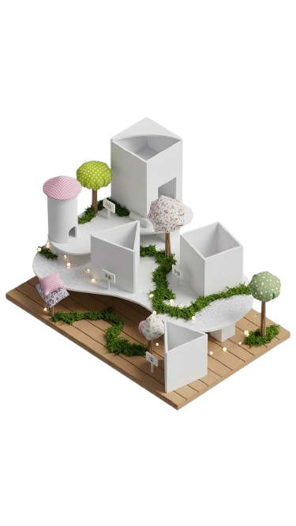
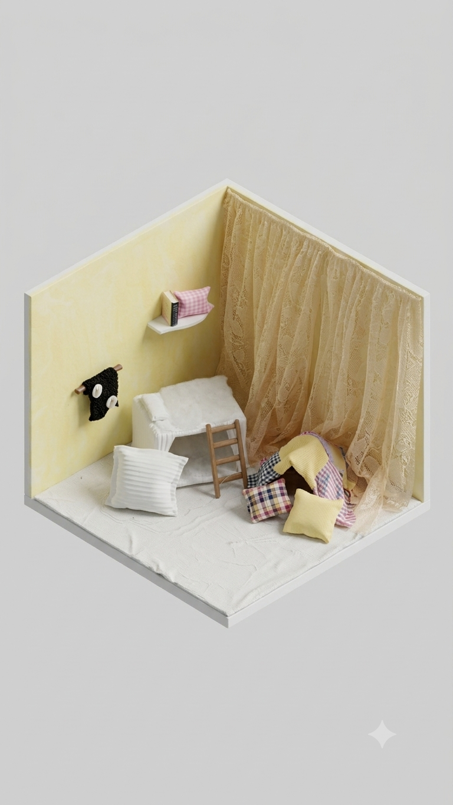
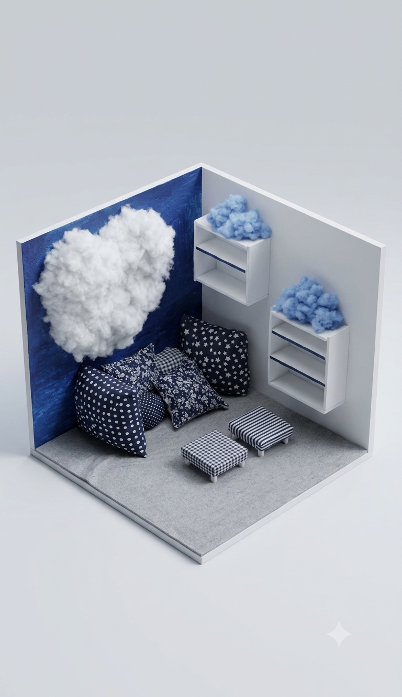
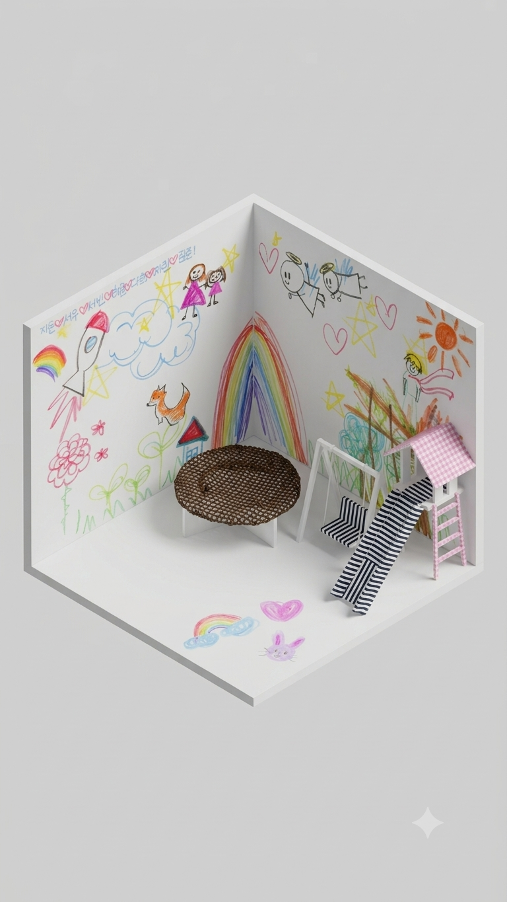
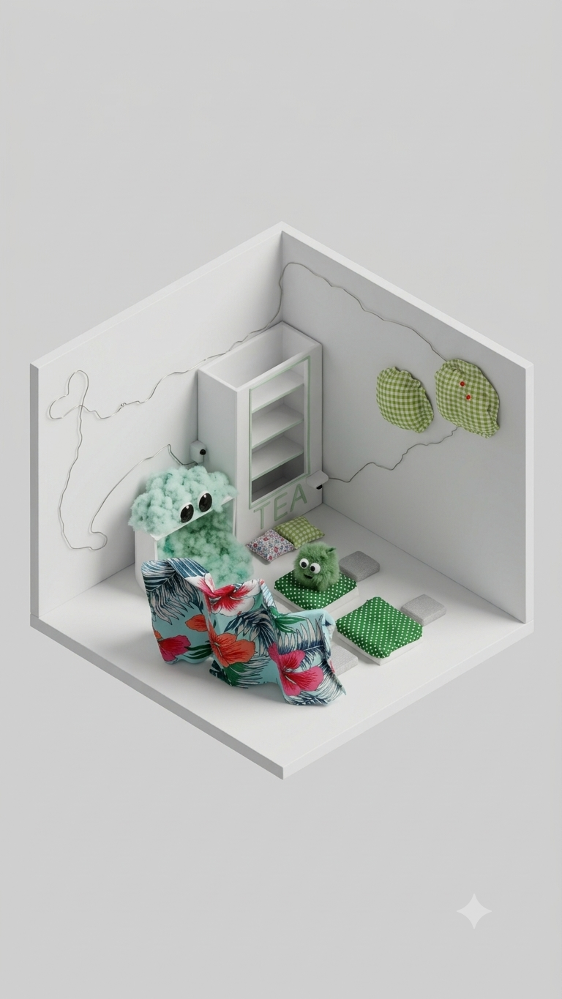
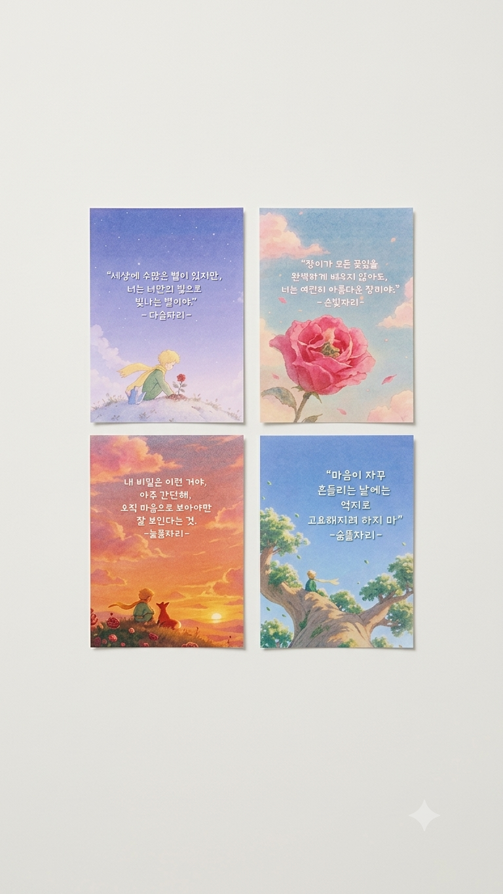
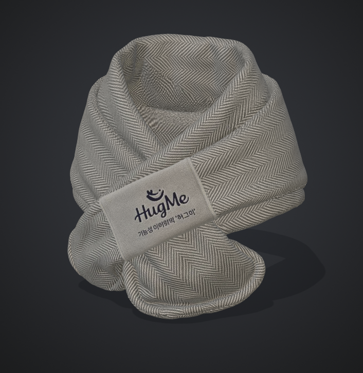
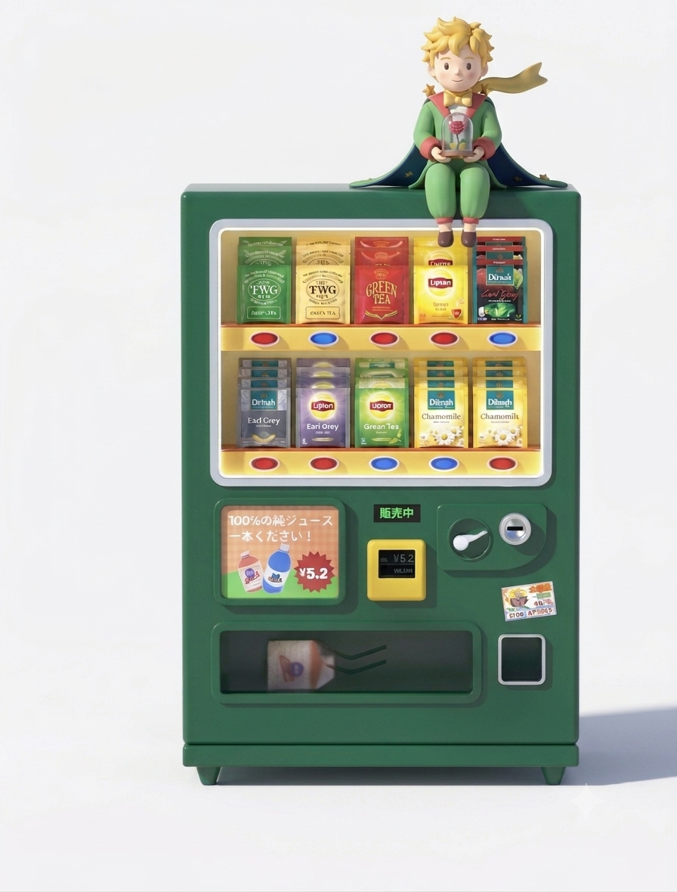
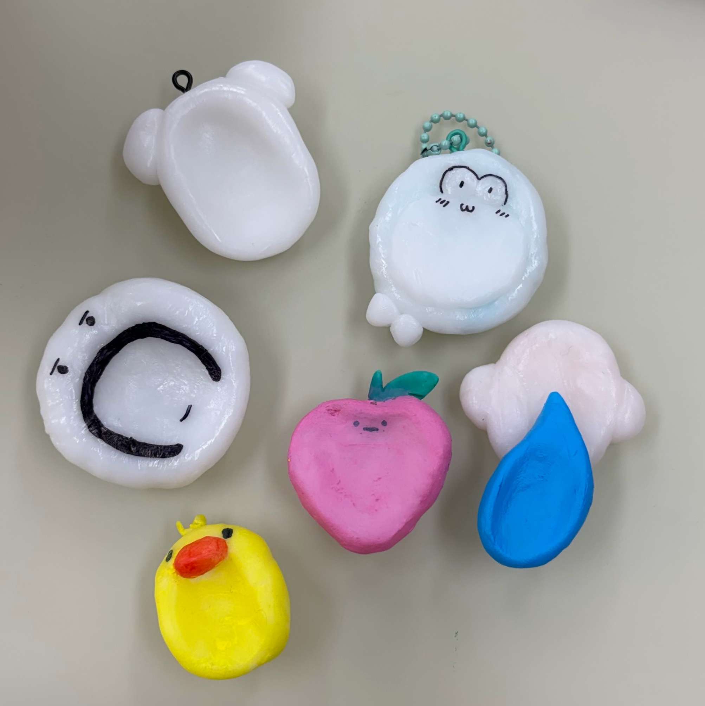

“가장 중요한 것은 눈에 보이지 않아”
24시간 타인에게 노출되는 공동체 생활 속에서 학생들은 비교와 완벽주의, 감정 억압으로 깊은 고립감을 겪고 있습니다. 하지만 기존 상담 제도는 문제 학생으로 보일까 봐 방문을 꺼리는 심리적 장벽이 존재했습니다. 우리는 이 문제를 해결하기 위해 '어린왕자'의 친근한 세계관과 오감 체험 테라피를 결합했습니다. 심리 케어를 '치료'가 아닌 '자존감 향상을 위한 자기계발'로 재정의하여, 누구나 부담 없이 찾아와 온전히 '나' 자신을 바라보고 회복할 수 있는 전용 테라피 공간을 만듭니다.

나를 깊이 있게 이해하고 위로받는 4가지 핵심 테라피 공간을 소개합니다.

따뜻하고 편안한 분위기 속 자기 자신을 되돌아보고 자존감을 키울 수 있는 공간입니다.

완벽해야한다는 압박 속에서 존재만으로 완벽한 존재라는 사실을 상기시킬 수 있는 공간입니다.

억압되는 환경 속 숨겨놨던 감정을 낙서로 털어놓는 공간입니다.

불안감 속에서 자연이 주는 평온함을 느낄 수 있는 공간입니다.
좌우로 슬라이드하며 다양한 콘텐츠와 소식을 확인해보세요.



